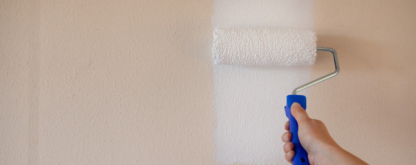
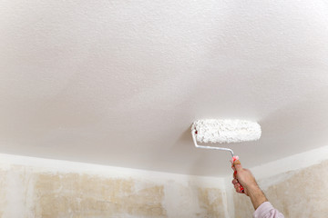
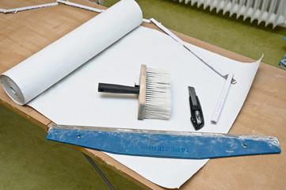
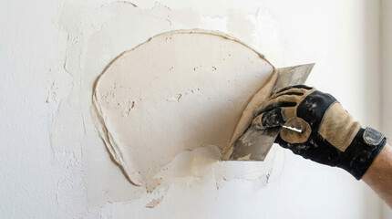

Innenanstrich & Innenrenovierung
Frisch gestrichene Wände lassen Räume heller und gepflegter wirken. Wir übernehmen Untergrund, Anstrich und die komplette Endreinigung – Ihre Möbel bleiben sauber abgedeckt.
Worum es geht

Ein neuer Anstrich verändert einen Raum spürbar: Wände wirken heller, gleichmäßiger und gepflegter. Damit das Ergebnis lange so bleibt, kommt es auf die Vorbereitung an – auf saubere Kanten, einen tragfähigen Untergrund und den richtigen Farbaufbau. Wir streichen Wohn- und Schlafräume in Mannheim und Rhein-Neckar-Region, renovieren komplette Wohnungen und übernehmen auf Wunsch die termingebundene Übergabe-Renovierung beim Mieterwechsel.
Für wen geeignet: Geeignet für Wohn- und Schlafräume, Flure, Küchen und Bäder im Altbau wie im Neubau – ob einzelner Raum, komplette Wohnung oder Renovierung vor Ein- oder Auszug.
Ihr Nutzen auf einen Blick
- Möbel und Böden werden vollflächig abgedeckt, Türen mit Staubschutz versehen
- Am Ende reinigen wir den Raum besenrein – Sie ziehen in einen sauberen Raum ein
- Für Feuchträume wie Bad und Küche wählen wir passende, schimmelhemmende Farbsysteme
Was wir konkret anbieten
Wandanstrich in Wohn- und Schlafräumen
Vor dem ersten Pinselstrich bereiten wir den Untergrund vor: spachteln, schleifen und grundieren. Dieser Schritt entscheidet darüber, ob die Wand am Ende gleichmäßig deckt. In Wohnräumen verwenden wir meist hochwertige Dispersionsfarbe; für stark beanspruchte Bereiche wie Flur und Küche empfehlen wir abwaschbare Latexfarbe. Wir streichen in der Regel zwei Anstriche – ein einzelner Anstrich lässt den alten Farbton oder Flecken oft durchschimmern.
Deckenanstrich
Decken zeigen Unregelmäßigkeiten durch Lichteinfall besonders deutlich. Wir verwenden hier überwiegend matte Farben, die das Licht weich streuen und Ansätze kaschieren. Möbel und Böden decken wir vollflächig ab, bevor wir beginnen.
Tapezierarbeiten
Wir entfernen alte Tapeten und entsorgen sie fachgerecht. Beim Neubezug beraten wir zur passenden Tapetenart: Vliestapete ist verarbeitungsfreundlich und gut wieder entfernbar, Raufaser kaschiert kleine Unebenheiten, Vinyltapete eignet sich für feuchtere Bereiche. Bei unebenen Wänden sind streichfähige Tapeten oft die unkomplizierte Lösung.
Spachtel- und Putzarbeiten
Risse, alte Bohrlöcher und Unebenheiten gleichen wir vor dem Anstrich aus. Je nach gewünschter Oberflächenqualität arbeiten wir in den Spachtelstufen Q1 bis Q4. Wo Licht flach über die Wand streift – etwa neben großen Fenstern – ist eine höhere Stufe (Q3/Q4) sinnvoll, weil dort jede Unebenheit sichtbar würde.
Renovierung bei Wohnungsübergabe
Beim Mieterwechsel zählt der Termin. Wir kombinieren Streichen, kleine Spachtelarbeiten und Endreinigung so, dass die Wohnung pünktlich zur Übergabe frisch und sauber ist – auf Wunsch innerhalb weniger Tage.
Der Ablauf
Besichtigung & Beratung
Wir sehen uns die Räume an, klären Farbwünsche und erstellen ein verbindliches Angebot.
Untergrundvorbereitung
Abkleben, abdecken, spachteln, schleifen und grundieren – die Basis für ein sauberes Ergebnis.
Anstrich / Tapezierung
Zwei deckende Anstriche oder fachgerechter Tapezierbezug, sauber abgesetzt an allen Kanten.
Endreinigung & Übergabe
Wir räumen Abdeckungen ab, reinigen besenrein und übergeben den fertigen Raum.
Beispiele aus unserer Arbeit



Jetzt Renovierung anfragen
Oder kostenlosen Besichtigungstermin vereinbaren. Wir besichtigen kostenlos und erstellen Ihnen ein verständliches Festpreisangebot.
Jetzt Renovierung anfragen Kurzfristig? ☎ 0621 1234567